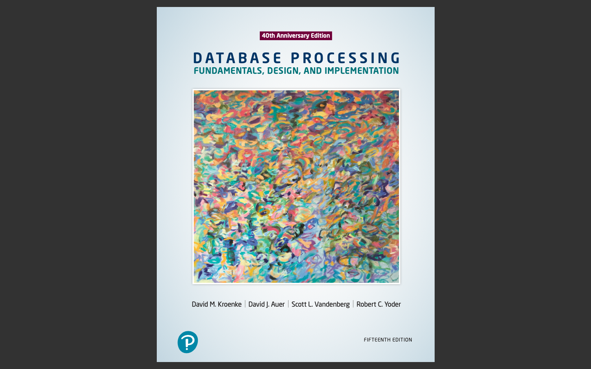
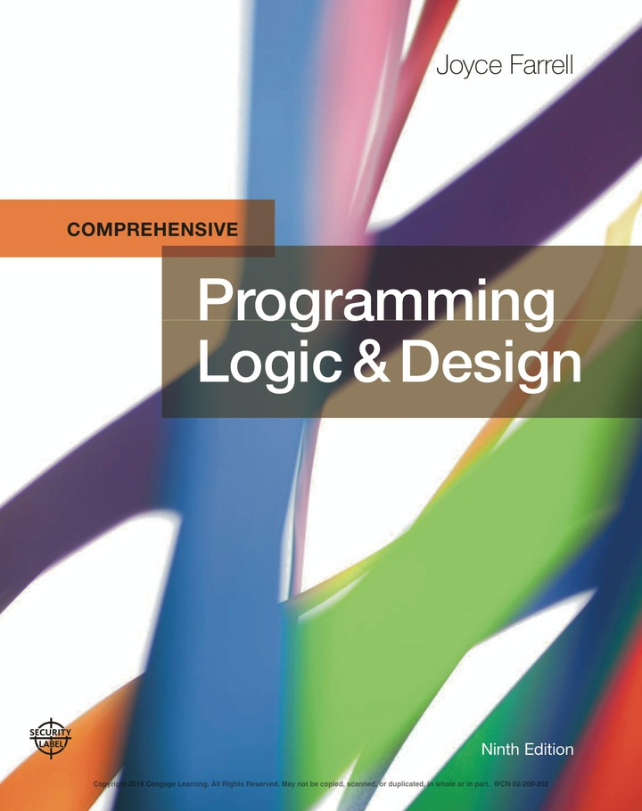
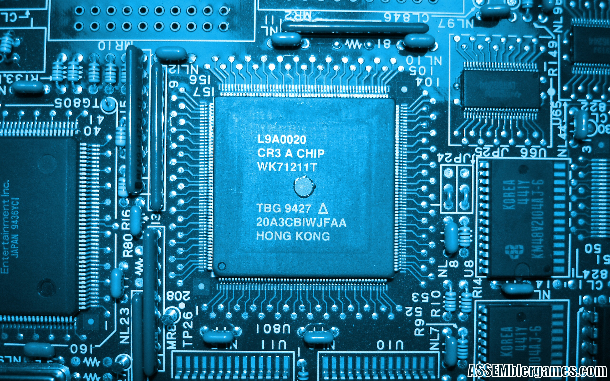
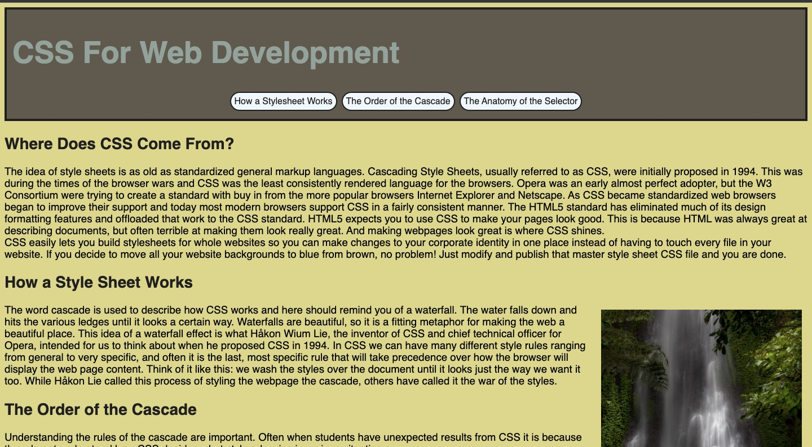

Level: 1
Course code: CST8215
Databases are used to store data and are a core component of many information technology systems. Students learn the fundamentals of relational databases design using Entity Relation Diagrams (ERDs), and use Structured Query Language (SQL) to create, modify and query a database. Students design and create databases that are maintainable, secure and adaptable to change in business requirements, using normalization. Students become familiar with the functions of a Database Management System (DBMS) and its components in comparison with legacy systems and alternative information storage mechanisms.
Level: 1
Course code: CST8116
Possessing the fundamentals of logic, problem-solving and programming language structure provides a solid foundation for further study in the field. Students develop introductory knowledge of computer programming with emphasis on problem analysis and design, using algorithms, pseudocode, flowcharts, UML Class Diagrams and testing, with the Java programming language used as a means to implement problem solution designs. Through an introduction to the Java programming language students use sequential structures, selection structures, repetition structures, variables, constants, methods, constructors, one-dimensional arrays, object-oriented programming, classes, objects, abstraction, encapsulation, inputs, outputs, coding conventions and documentation. Theory is reinforced with application by means of practical laboratory assessments.
Level: 1
Course code: CST8101
The essentials of computer software, hardware, and laptop management form the foundation for building further technical programming skills. Learn to configure your laptop environment, basic PC and troubleshoot problems. Students create backups, install virus protection, and manage files through a basic understanding of the Windows Operating System. Students also install and configure the Windows Operating System, and a virtual machine environment and explore computer organization including basic numerical systems, functional hardware and software components needed to run programs
Level: 2
Course code: CST8285
The World Wide Web (WWW) has become an integrated part of everyday life. Students develop basic skills of web programming, website design and implementation. JavaScript, HTML5, and PHP are used to explore web-based solutions to problems of increasing interactivity and complexity. Lectures are reinforced by practical assignments that encourage students to construct and maintain their own websites.
Level: 2
Course code: CST8284
Working in the field of information technology as a programmer requires a firm understanding of Object-Oriented Programming (OOP) concepts. Students explore object-oriented programming methodology using the Java programming language. Object oriented concepts, such as encapsulation, inheritance, abstraction and polymorphism are covered and reinforced with practical applications. Students explore the basics of data structures and algorithms as well as basic Graphical User Interface (GUI) programming.
Level: 2
Course code: CST8102
Operating systems form the backbone of information technology systems coordinating the interaction between hardware and software. Students explore the basic concepts and components of Operating Systems (OS), and how they function and interact with hardware and software components. Students examine the details of operating system structures, process management, storage management, installation, configuration, and administration both in theory and through practical assignments based on the GNU/Linux operating system. Lab work is designed to implement the theory by developing skills using the powerful GNU/Linux command-line tools and utilities.
Level: 2
Course code: CST2355
Database systems can automate data processing tasks as well as tie into the security of information technology systems. Students acquire practical experience using market-leading object-relational database management systems like Oracle and MySQL. Students obtain hands-on experience with advanced engineering modeling tools along with SQL, SQL scripts and programming with Oracle's PL/SQL blocks. Database concepts covered include advanced SQL, case structures, rollup and cube operations, metadata manipulation, data storage and retrieval, security and transaction control and data warehousing